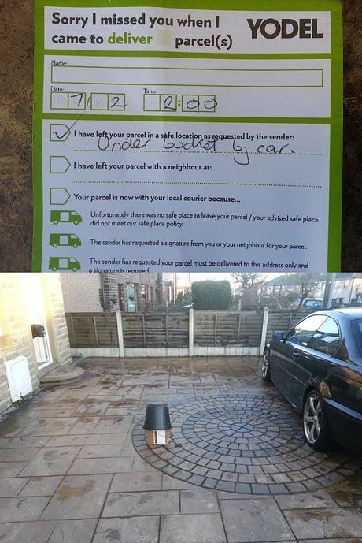

영국도 참으로 이것저것 그지같은 일이 많지만. 그중 내가 제일 학을 띠는게 배송 이랑 은행인데 ㅋㅋㅋㅋㅋㅋ
아....오랜만이야 이런 기분 ㅋㅋㅋㅋㅋㅋㅋㅋㅋㅋㅋ
6월 7월 이것저것 미친듯이 사제끼고 맘에안드는거 리턴하다보니 배송사고(?)가 하나 터졌습니다 -_-
ASOS에 리턴시킬때 배송업체를 골라 라벨을 출력하면 되는데 배송올때 업체가 Hermes 였길래 너무나 자연스럽게 Hermes 선택을 해서 리턴라벨 출력하고 동네 ParcelShop 에 보낸게 7월12일;;
↓
아직까지 소식이 없길래 ASOS에게 문의
↓
ASOS: 우리 아직 리턴 아이템 못받았어. 배송서비스 문의해봐
↓
이틀전 Hermes 고객센터로
내 트래킹 넘버 / 리턴 접수후에 받은 영수증을 찍은 사진 / 니네 웹사이트에 내 물건이 7월14일 리테일러에게 배송진행중 이란 메세지 이후 업데이트가 멈춰있다 라는 설명 + 스샷 과 함께 문의글을 남김
↓
Hermes: 우린 그것에 대한 정보가 없어서 널 도와줄 방법이 없어. 리테일러에게 문의해봐
라고 답이 옴 ㅡㅡ;
이게 무슨 개소리야;; 니네가 배송업체이고 트래킹번호에 바코드 찍힌 영수증이 있는데;;
너님들 웹사이트에 지금 내 아이템이 배송 진행중이라는 상황업데가 떡 올라가 있는데;;;
니네가 모르면 누가 알아;;;
↓
Hermes와 라이브챗 시도
이메일 답변이랑 똑같은 소리함.
H: 정보가 없으니 널 도와줄수없다. 리테일러에게 문의해라
나: 리테일러랑 이미 이메일 세번이상 주고받았다. 아이템 못 받았다고 한다. 트래킹 넘버 조회해보니까 업데이트가 14일로 멈춰있다. 내 아이템 어디루 간거냐?
H: 우린 정보가 없다. 우리가 너에게 해줄수 있는건 없다.
나: 그럼 이건 누구 책임이냐? 왜 배송 추척이 불가능하냐? 배송 실패 내지는 직원 실수 같은데 누가 책임을 지는거냐?
H: 우리는 거기에 대한 정보가 없다. 리테일러에게 문의해봐라 (아놔 진짜 이럴때마다 느끼는거지만 녹음기랑 대화하는거 같음 -_-;;)
나: 아니 나 정말 궁금해서 묻는건데. 난 내가 너희 업체를 통해 ASOS로 물건을 보냈다는 모든 증거를 갖고있다. 여기에 대해 어떻게 설명을 할거냐. 당신들이 배송을 하는 회사인데 당신들이 모르면 누구에게 물어보라는거냐.
(5분 이상의 긴 침묵이 이어짐)
H: 우린 정보가 없다. 좋은하루 되라. ASOS에게 문의하셈
이러고 라이브 챗 방을 지가 먼저 나가버림 -_-;;;
순간 너무 어이가 없어서 벙찜;;; 뭐지 이 신박한 넘들은??
순간 느므 짜증이 나서 라이브챗 내용 스샷과 함께 상담원 이름 등등 컴플레인 메일을 한바닥 써서 보냄
(영어는 이럴때 제일 잘 나옵니다 ㅡㅡ;; 열받아서 항의메일 쓰거나 전화통화 할때는 랩도할 기세 ㅋㅋㅋㅋ)
근데 회사 자체가 이런 분위기이면 과연 이 컴플레인이 무슨 소용이 있을까 싶음
그냥 평소대로 로얄메일 쓰지 왜 괜히 Hermes 라벨은 출력해서 이고생을 하는겨
것도 많은 돈도 아냐 ㅡㅡ;;; 내가 왜 30파운드 정도 되는 돈 리펀받는데 이렇게 많은 시간과 에너지를 써야하냐고 ㅡㅡ;;
ASOS: 우린 니물건 못받았어. 배송업체에 연락해봐
Hermes: 우린 정보가 없어. ASOS에게 문의해봐.
뭐 이런 거지같은 상황이 진행중입니다 -_-;;
이번일의 교훈은 Hermes 다시는 사용안해? 정도? ㅜㅜ
내인생에서 최악은 YODEL 이었는데 비슷하게 강한(?)업체가 나타났다;;
그러고보니 이생키 끝까지 사과조차 없었어. (두고두고 곱씹으며 열받아 하고 있는중 ^^;;)

영쿡 배송서비스의 위엄 ㅋㅋㅋㅋㅋ (출저: http://bit.ly/2akz1vi )
구글에 YODEL failed to deliver 라고 치면 웃긴짤 많습니다.
저도 위 사진같은 경험 있어효 ㅋㅋㅋㅋㅋㅋ 집 문앞 초록색 플라스틱 박스안에 숨겨놓고 메세지 카드에 'GREEN'이라고 적어놓고 간주제에
내가 물건이 하도 안와서 YODEL 서비스 센터에 문의하니까 배송하는 직원이 옆집 남자가 대신 받았다고 거짓말 하는 바람에 보름정도 개고생 했던 적이 있었더랬죠 -_-;; (결국 다 포기할때쯔음 하우스메이트가 우연히 발견;;;)
심심할때마다 이런일이 터지면서도 인터넷 쇼핑을 못끊는 저도 참 큰일입니다 허허 ㅋㅋㅋ